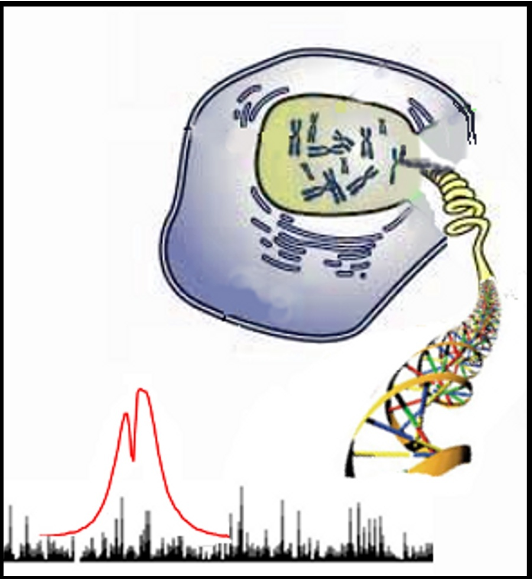
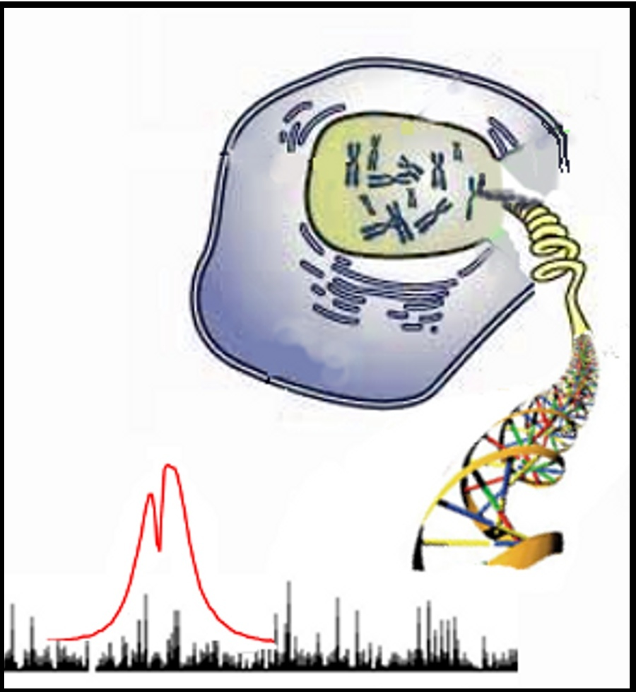

Signal detection and estimation using next-gen sequencing data

Signal detection and estimation using next-gen sequencing data
Dfilter is a generalized signal detection tool for analyzing next-gen massively-parallel sequencing data by using ROC-AUC maximizing linear filter. Hence it is an ideal tool for detecting peaks in tag-profile of ChIP-seq, DNase-seq, FAIRE-seq, ATAC-seq, MNase-seq, RIP-seq, CLIP-seq, ChIP-exo, Sono-seq etc.
Efilter is signal estimation tool for estimating relevant signals using next-gen sequencing data with the help of linear filter.
Both Dfilter and Efilter can take more then one massively-parallel sequencing data and thus they provide an ideal platform for combining patterns of different factors and markers.
New versions of DFilter and Efilter are available now. With new version of DFilter/EFilter it is possible to use bam files as well precalculated score in bedGraph format (read more.. ) . Many more features
The extended version of DFilter can also be used to estimate read-count on given set of peaks and perform GC bias correction.
Download Dfilter and Efilter package�
Download binaries or source code (click here to download)
Important: For running binary code, include the DFilter folder in environment variable PATH by typing
export PATH=path_of_DFilter_folder:$PATH
Download binaries or source code of extension of DFilter(click here to download)
The extension of DFilter has many functions like normscore for read-count estimation, GC-bias correction etc
Matlab code: write to kumarv1@gis.a-star.edu.sg or vibhor@iiitd.ac.in
For help and tutorial see
Documentation (click here) for new version
why should I use DFilter (FAQs)�
Use Dfilter on DNAnexsus cloud computing
�Citation:
Kumar V, Muratani M, Rayan NR, Kraus P, Lufkin T, Ng HH and Prabhakar S, Uniform, optimal signal processing of mapped deep-sequencing data, Nature biotechnology, 31, 615-622 (2013) PMID: 23770639
Publications citing the DFilter manuscript on google scholar
EFilter is available with DFilter software package
For using efilter: the precalculated score file to predict expression using Histone modification for refseq genes in Human genome(hg18) and hg19 is already provided with dfilter package.
For enquiries about problems in running the programs or to get the source code contact : kumarv1@gis.a-star.edu.sg